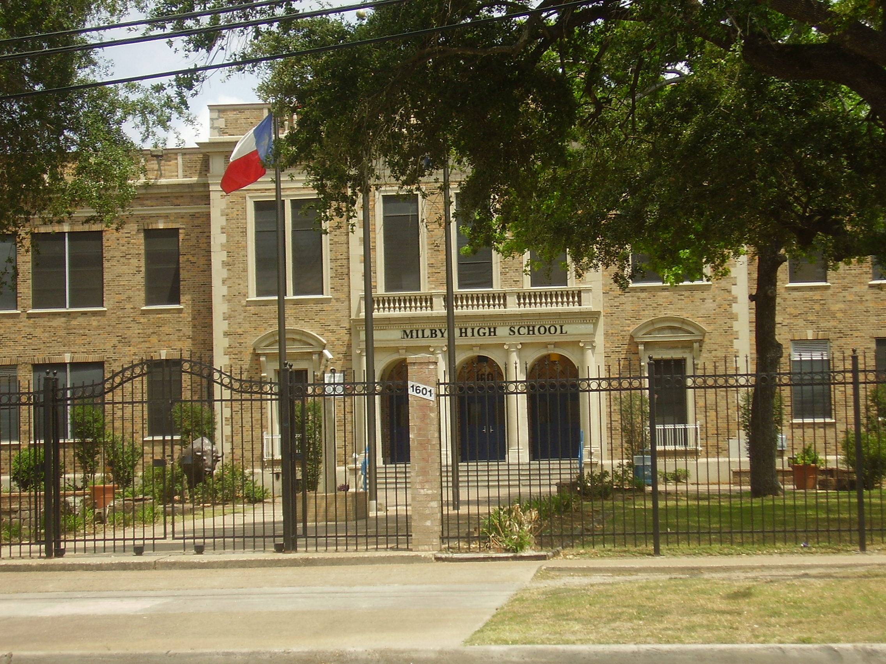

Determining how much funding a school gets is not reliant on one way, but rather a multitude of ways. However, a very large part of determining the funding of a school comes from the property tax of surrounding houses as this money is used for the school. This gives reason to the trend of seeing less renovated schools with old/used textbooks in poverty stricken neighborhoods.

A school whose surrounding houses have a median value of $96,495A school whose surrounding houses have a median value of $827,768
OTHER INFORMATION:
School funding is not the only thing that makes schooling unequal. According to the University of Pennsylvania, there is a positive correlation between family income and a student’s GPA, SAT/ACT scores, graduation rank, and even armed forces test. Unfortunately in schools of poorer communities, the youth also have a lower incentive to achieve academic success. Since they are more likely to live near crime and other bad influences, education may not always be thought of as a top priority. Also, since everyone around them is in the same position as them since any well off individual would likely send their children to a better school, the cycle can never end. In order to end the ongoing cycle of unequal schooling and the continuation of the poverty cycle, something must be done.
To see what can be done about this issue, visit the Solutions page.